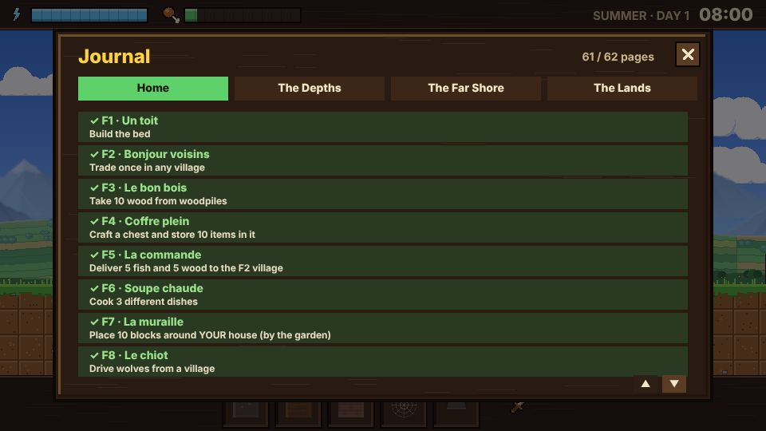
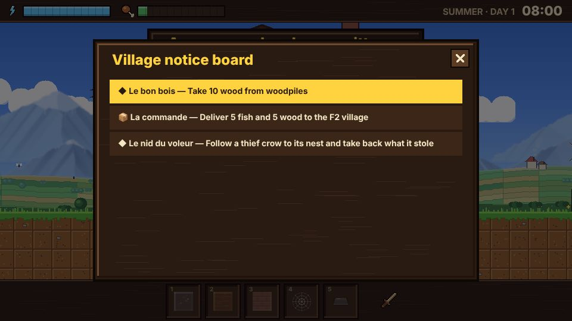

256 generated worlds, read by three agents playing from a kid's side of the screen. Five questions: where it turns into toil, where the story wobbles, which tracks are too hard or too easy, where the story breaks, and whether a player can even tell they are on a story track.
61% of worlds can reach the ending. The other 99 are missing at least one thing a quest requires, and nothing in the game tells the player.
Worlds blocked per missing requirement. A world can miss more than one, so the bars add up past 99.


Outcome: 256 / 256 worlds can finish. Small, contained code in world gen.
{village}Outcome: a player always knows the next story step and why it matters.
Outcome: no wait longer than one in-game day, difficulty climbs with distance.
Two bots played every world: one that knows the map, one that explores and follows the journal. In 1.10.4 neither ever reached the ending. Death counts are rough (the food model is crude); the structural findings were checked against the code.
Mimics never spawned, so P13 and the ending were impossible in every world. Now one sleeps in the first hall of every cave while P13 is open.
One-shot actions done early lost their quest for good (arcade wall, secret room, dragon coins, Crossing stone, crafting the lantern early). They now count when the quest opens.
Music-box room missing in 24% of worlds, dragon room in 46%, and 2 worlds had no cave near home. Every world now has two caves, with both rooms.
Ore ran out in 40% of worlds and scholar’s stones ran out for P10. Ore grows back each season; stones wake a week after you solve them.
Slowest quests: E1 Great Siege (11.5 game-days median), C5 imps (8.8), F12 festival (about 7 days of waiting), F5 fish with 7-day seasons (26 days). E1, C5 and fishing are retuned; F12 is unchanged.
The same 256 worlds, built by the game’s own code, now all contain every quest target: camp, library, crabs, crow, beetles, imps, sprites, harpies, gargoyles, golem, snowmen, music-box room, dragon room and a mimic. 0 blocked, 0 page errors.
Same grid, same two bots, same model as the 1.10.4 run. The bot that knows the map now reaches the ending in almost every world; the explorer that only follows hints finishes a third of the time, and every one of its failures is a death, not a missing quest.
| Measure | Efficient 1.10.4 | Efficient 1.12.1 | Explorer 1.10.4 | Explorer 1.12.1 |
|---|---|---|---|---|
| Reached the ending | 0 / 144 | 141 / 144 | 0 / 144 | 58 / 144 (gentle 51, normal 7) |
| Median quests done of 62 | 58 | 62 | 48 | 60 |
| Median day on the Far Shore | 4 | 4 | 55 | 40 |
| Median day the Frost King falls | 47.5 | 49.5 | 115 | 103 |
| Median deaths | 16 | 19 | 19 | 23 |
| Quests lost by doing them early | 0 | 0 | 135 runs | 0 |
| Search time per run | — | — | 56 min | 37 min |
Normal-mode Lands are too hard for a child. The explorer finished 7 of 72 normal runs against 51 of 72 in gentle mode; Lands quests got 15–85 % deadlier at 1.6–2.25×. Fix: lower the Lands to about 1.3–1.7×, or let gentle mode also halve the ring multiplier.
The Great Siege is still the deadliest and slowest quest (about 4 deaths per run, 8.5 active days), even at 10 per night. Fix: 8 per night, or a bonus for towers and spikes.
The flask is a chicken-and-egg: you hunt salamanders in the heat to make the heat protection. Fix: sell scales or a flask at the Frozen North trader, or no heat on the first lava tile.
The village fair still idles about 7 days. The sunken library is a spike (7 answers at grade + 2 with wraiths at 2×). One world in 330 has no goblin in either cave, so P5 can't be done. P2 is slow in 27 % of worlds with few ore nodes. The 3-day respawn still gates imps, gargoyles and sprites. Boar stuns and the igloo need a how-to line. Quests that complete on opening do it silently.
Confidence: the before/after comparison is solid because both runs use the same model. Absolute death counts are not: combat is a dice model and about half of explorer deaths happen while starving in a crude food model.